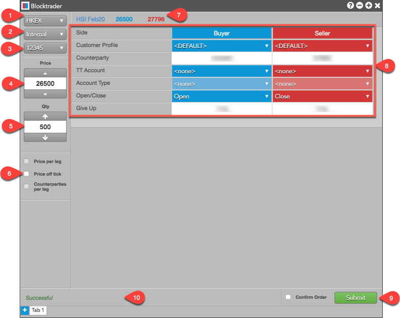
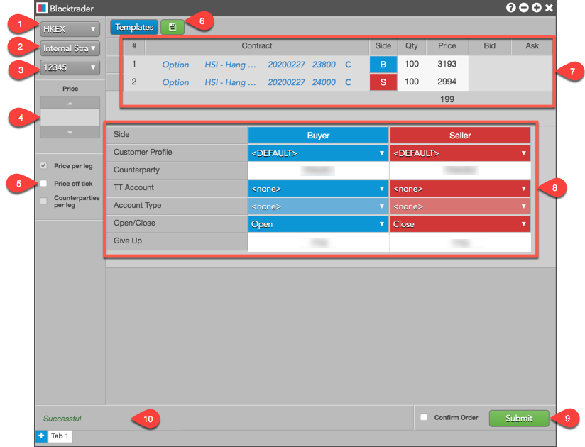
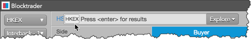

The Blocktrader widget supports entering the following OTC trades on HKEX:
- T1: Internal Trade — Orders where a Buy-side participant and an Ask-side participant are set within the same order. Both sides of the order are then submitted as a cross order.
- T2: Combo (Internal Strategy) — A single order with multiple instrument legs. However, a user-defined strategy is not created at the exchange.
- T4: Interbank 1-Sided Trade — Orders that are only posted to the participant listed as the order’s counterparty. Interbank trades are only executed after the counterparty submits a matching order.
Blocktrader display for HKEX Interbank 1-Sided and Internal trades
Blocktrader consists of the following components for submitting Interbank 1-Sided and Internal trades on HKEX.

The image shows the following:
- Exchange selector — Lists exchanges with OTC/Wholesale trades supported on TT®
- Trade Type selector — Lists the OTC/Wholesale trade types supported for the selected exchange.
- Account selector — Sets the account used for submitting the trade for both the Buyer and Seller. The account or clearing account "override" in Setup is sent to the exchange API as ex_client_s.
- Price — Used for entering a price for the transaction. You can also use the up and down arrows to set the price.
- Quantity — Used for entering the Buy or Sell quantity of the trade. You can also use the up and down arrows to set the quantity.
- Price off tick — When checked, allows you to enter an off tick for instruments that support tick sizes smaller than what is displayed.
- Instrument search — Allows you to search for and select the instrument being traded. The best Bid and Ask price are displayed for the selected instrument.
- HKEX OTC fields — Allows you to complete the fields required by the exchange. Fields are displayed based on the trade type.
- Confirm Order and Submit — Allows you to confirm the order before submitting. When Confirm Order is checked, clicking Confirm allows you to check the details of the trade before clicking Submit.
- Message indicator — Indicates if the trade was successfully sent to the exchange. Also shows if the order needs to be confirmed before submitting.
Blocktrader display for HKEX Internal Strategy trades
Blocktrader consists of the following components for submitting Internal Strategy (combination) trades on HKEx.

The image shows the following:
- Exchange selector — Lists exchanges with OTC/Wholesale trades supported on TT®
- Trade Type selector — Lists the OTC/Wholesale trade types supported for the selected exchange.
- Account selector — Sets the account used for submitting the trade for both the Buyer and Seller. The account is sent to the exchange API as ex_client_s.
- Price — Enter the price of a single instrument transaction. You can also use the up and down arrows to set the price.
- Price off tick — When checked, allows you to enter an off tick price per leg for instruments that support tick sizes smaller than what is displayed.
- Templates — Allows you to select a strategy template to configure and submit multi-leg strategy
transactions. Click to save your custom strategy as a template.
- Leg definition grid and instrument picker — The instrument picker allows you to search for and select the instrument being traded. The grid allows you to set a price and quantity for each leg. For multi-leg strategies, the grid displays the net sum of the best Bid and Ask prices for each leg. Click "+" to add a leg or X" to remove a leg as needed.
- HKEx OTC fields — Allows you to complete the fields required by the exchange. Fields are displayed based on the trade type.
- Confirm Order and Submit — Allows you to confirm the order before submitting. When Confirm Order is checked, clicking confirm will allow the user to check the details of the trade before clicking Submit.
- Message indicator — Indicates if the trade was successfully sent to the exchange. Also shows if the order needs to be confirmed before submitting.
Submitting HKEX Interbank 1-Sided and Internal Orders in Blocktrader
Interbank 1-Sided trades are only executed after both traders submit a matching order. The exchange checks the following to match an Interbank Trade:
- Both orders must match the same series, price, and quantity.
- One order must be a "Buy" and the other a "Sell".
- Each participant must set the other participant as its counterparty.
Note: Prior to submitting an OTC trade, you should know the counterparty’s Participant
Code. For Interbank trades, you must verify that the counterparty enters a matching Interbank order.
To submit an HKEX Interbank 1-Sided or Internal Order in Blocktrader:
- Select HKEX from the Exchange selector.
- Search for and select the instrument being traded.

- Select either Interbank 1-Sided or Internal in the Trade Type selector.
- Set the price and quantity for the trade.
- Complete the common fields for Interbank and Internal trades.
Note:
For an Internal trade, populate credentials for both the Buyer and Seller sides of the trade.
- Click the Submit button.
If Confirm order is checked, confirm the order before submitting it to the exchange.
Submitting HKEX Internal Strategy Trades in Blocktrader
Note: For a list of supported strategies on the exchange, refer to HKEX Tailor Made Combinations.
To submit HKEX Internal Strategy Trades in Blocktrader:
- Select HKEX from the Exchange selector.
- Select Internal Strategy in the Trade Type selector.
- Use the instrument picker to search for and select an instrument for each leg of the strategy.

- Select a quantity and price for each leg of the strategy.
Blocktrader shows the net price differential for the legs of the strategy.
- Complete the common fields for Internal Strategy trades.
Note:
For an Internal trade, populate credentials for both the Buyer and Seller sides of the trade.
- Click the Submit button.
If Confirm order is checked, confirm the order before submitting it to the exchange.
Common Fields for HKEX Interbank 1-Sided, Internal, and Internal Strategy trades
|
Blocktrader Field
|
Value(s)
|
Description
|
| Side |
Buy or Sell |
Sets which side of the trade you are entering. |
|
Customer Profile
|
A drop-down list of available Order Profiles. |
Administrator-defined "Order Tag Defaults" and user-defined Order Profiles are listed. Order profiles uploaded to your workspace are also shown.
Note: The "Customer Information" value in Order Tag Defaults or the User | Order Routing tab is sent to the exchange in the "customer_info_s" API field and appears on the OTC order at the exchange for back office reconciliation.
This is an optional
field.
When an order profile is selected, the TT Account
field may be populated with the user's account number.
|
|
Counterparty
|
Counterparty Participant Code
|
Sets the counterparty for the trade and is forwarded to the
exchange API as part of the ex_customer_s field.
Note:
This is a required field for HKEX Interbank 1-Sided trades and Internal trades.
|
|
TT Account
|
A drop-down list of accounts assigned to the user
|
Sets a specific account for the Buyer or Seller. This account will be used for the Buyer or Seller instead of the account selected in the order panel. All accounts assigned to the user are listed in the drop-down menu. The TT Account value is sent to the exchange API as ex_client_s. This is an optional field. The default value is "none".
Note: The exchange does not allow the * and % characters to be used as part of the account number.
|
|
Account Type
|
A1-A4, G1-G2, M1-M3, P1-P3, U1-U2. |
Account types are automatically mapped to HKEX account codes in TT based on the routing account settings. Sent to the exchange in the ex_client_s field. This field is grayed out in Blocktrader.
|
| Open/Close |
Open or Close
|
Sets whether the trade opens or closes a position.
|
|
Give Up
|
Carrying Participant Code
|
Sets the five-digit Carrying Participant Code provided by the securities code committee.
This field is a required field when submitting a Give Up order and is sent to the exchange API as
part of the ex_customer_s field.
|